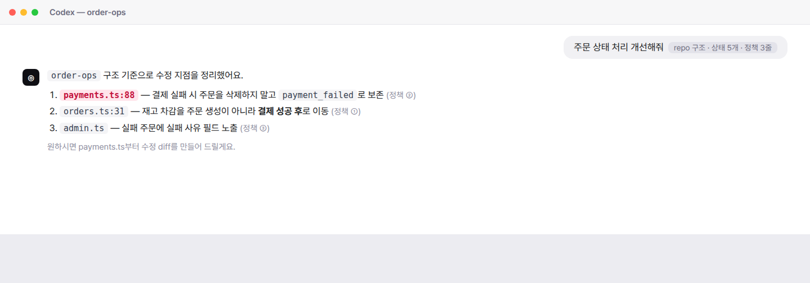
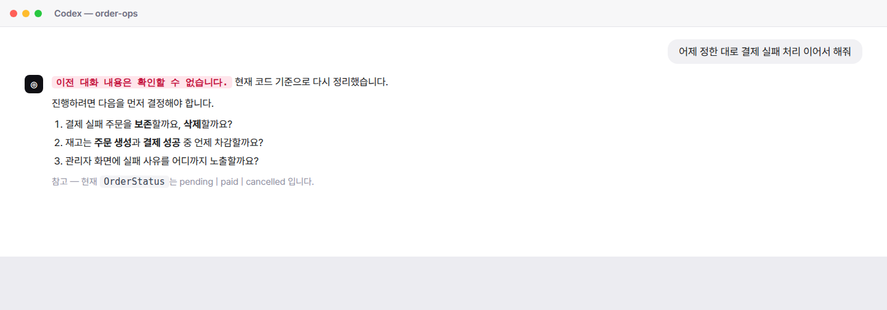
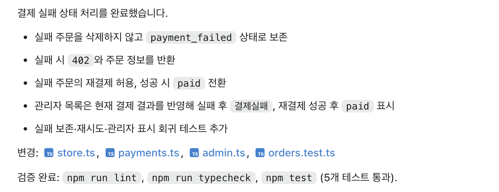

CHAPTER 1
문제 정의
잘 되는 요청, 안 되는 요청
“이 함수 고쳐줘”
“테스트 짜줘”
“README 정리해줘”
“테스트 짜줘”
“README 정리해줘”
범위가 이미 정해진 일
“주문 상태 처리 개선해줘”
“이거 맞게 고친 거 맞아?”
“어제 하던 거 이어서 해줘”
“이거 맞게 고친 거 맞아?”
“어제 하던 거 이어서 해줘”
범위부터 정해야 하는 일
완료 조건 — “됐는지”를 확인할 방법이 요청 안에 들어 있느냐의 차이다
CHAPTER 1
오늘의 목차
4가지 실패 패턴
01
매번
재설명
재설명
02
바로
구현
구현
03
검수
불가
불가
04
대화창에만
남음
남음
설명은 세션이 끝나면
컨텍스트에서 사라진다
컨텍스트에서 사라진다
요청에 없던 결정까지
코드로 정해진다
코드로 정해진다
무엇을 통과해야 하는지
아무도 정하지 않았다
아무도 정하지 않았다
파일로 남지 않은 결과는
다음 작업으로 이어지지 않는다
다음 작업으로 이어지지 않는다
CHAPTER 1
데모 미리보기
실패하는 구조 실험
order-ops/
├─ src/orders.ts
├─ src/payments.ts
├─ src/admin.ts
├─ src/store.ts
├─ tests/
└─ README.md
# 이 repo에 없는 것
AGENTS.md
docs/
npm run preflight
실행 가능한 코드베이스주문 · 결제 · 운영 모듈 — 코드는 돌아간다
기준 · 정책 · 검증이 없다무엇을 먼저 읽고, 무엇을 지키고,
무엇으로 검증할지
무엇으로 검증할지
이 서비스가 지켜야 할 규칙 — ① 결제 성공 후에만 재고 차감 · ② 결제 실패 시 재고 미차감 · ③ 재고 부족은 주문 생성 전 차단
CHAPTER 1
실습 준비
실습 repo 받기
「Use this template」 버튼 클릭
내 계정에 order-ops 저장소가 새로 생깁니다
내 계정에 order-ops 저장소가 새로 생깁니다
git clone https://github.com/<내계정>/order-ops.git
cd order-ops
npm install
npm run dev
자세한 안내는 README설치 요구사항 · 실행 확인 · 자주 막히는 지점까지
repo에 정리해 뒀습니다
repo에 정리해 뒀습니다
오늘은 보기만 하셔도 됩니다직접 손을 움직이는 건 2강부터입니다
준비물 — Node 20+ · npm 또는 pnpm · VS Code · Codex CLI · ChatGPT Desktop App
CHAPTER 1
패턴 01 · 정의
01
매번 재설명
✓
1,500자 long prompt
컨텍스트 윈도우에 약 1,000토큰으로 적재됨
컨텍스트 윈도우에 약 1,000토큰으로 적재됨
✓
높은 퀄리티의 답변
학습된 게 아니라 in-context 참조 덕분
학습된 게 아니라 in-context 참조 덕분
✕
세션 종료 = 컨텍스트 소멸
모델 자체에는 아무것도 남지 않는다
모델 자체에는 아무것도 남지 않는다
✕
전달되지 않음
✕
컨텍스트 윈도우 0토큰에서 시작
새 세션은 이전 대화를 이어받지 않는다
새 세션은 이전 대화를 이어받지 않는다
✓
모델이 읽을 수 있는 건 repo뿐
세션 간에 살아남는 것은 파일뿐이다
세션 간에 살아남는 것은 파일뿐이다
✕
기록이 없으니 다시 설명해야 함
같은 1,000토큰을 다시 입력한다
같은 1,000토큰을 다시 입력한다
무상태(stateless) — 대화는 모델을 바꾸지 못한다. 세션 간에 살아남는 건 파일뿐 — 그래서 설명은 컨텍스트가 아니라 repo에 넣는다
CHAPTER 1
패턴 01 · 데모
데모 1 — 두 번의 세션
LIVE
1,500자 컨텍스트 설명 (repo 구조 · 상태 5개 · 정책 3줄 · 완료 조건) + “주문 상태 처리 개선해줘”
“이전에 정한 대로 결제 실패 처리 이어서 해줘” — 컨텍스트는 붙이지 않는다
볼 것 — 세션 A에서 확정한 정책이 세션 B에 남아 있는가
CHAPTER 1
패턴 01 · 데모
세션이 바뀌면 결정이 사라진다
세션 A
세션 B — 새 세션


> 1,500자 컨텍스트 + 주문 상태 처리 개선해줘
> 이전에 정한 대로 결제 실패 처리 이어서 해줘
우리 파일을 짚고 보존 결정까지 확정
이전 세션을 모른다 — 같은 질문을 다시 한다
같은 repo, 같은 모델 — 달라진 건 세션 하나뿐. 사라진 건 대화가 아니라 이전 세션에서 내린 결정이다
CHAPTER 1
패턴 01 · 진단
세션이 바뀌면 원점
Codex가
아는 것
아는 것
repo에 남은 것 0
세션 1
세션 2
세션 3
해법의 방향 — 이 설명을 AGENTS.md로 옮겨두면, 다음 세션부터는 알아서 읽는다 (4강)
CHAPTER 1
1강 · 클립 2
패턴 ② 바로 구현
정책 결정이 코드에 섞이는 순간
지난 클립 ✓ — 실험 무대 준비 · 패턴 ① 매번 재설명 — 설명은 세션과 함께 사라진다
이번 클립 — 정의 → 라이브 데모 ② → 진단 「diff에서 찾아야 할 세 가지」
CHAPTER 1
패턴 02 · 정의
02
바로 구현
요청
“결제 실패 상태 처리해줘”
계획
묻지 않고 건너뜀
코드
어디까지 수정할지 예측 불가
묻지 않은 결정 다수
묻지 않은 결정 다수
사람이 정해야 할 것을, agent가 정해버린다
요청이 구체적일수록 agent는 묻지 않는다 — 요청에 적히지 않은 결정은 agent가 대신 정한다. 어디서 멈출지는 사람이 설계해야 한다 (3강)
CHAPTER 1
패턴 02 · 데모
데모 2
LIVE
핵심 포인트
어디서 멈추는가 · 그리고 무엇을 대신 정했는가
CHAPTER 1
패턴 02 · 진단
diff에서 찾아야 할 세 가지
01
요청에 없던 게
생겼나
생겼나
시킨 적 없는데 늘어난 것
범위
02
밖에서 쓰던 동작이
바뀌었나
바뀌었나
API 응답이나 상태 값처럼 남이 의존하던 것
호환
03
같이 고쳤어야 할 곳은
없나
없나
그대로 둬서 앞뒤가 안 맞게 된 것
누락
이건 코드로 정할 일이 아니라, 사람이 정해야 할 규칙입니다
CHAPTER 1
1강 · 클립 3
패턴 ③ 검수 불가
3분이면 될 확인이 30분 걸리는 이유

데모 ②의 마지막 답변
지난 클립 ✓ — 패턴 ② 바로 구현. 이번 클립은 그 답변을 다시 띄워 검수 가능성을 따진다
CHAPTER 1
패턴 03 · 정의
03
검수 불가
✓
완료했다고 말한다
✓
고친 파일을 알려준다
✓
테스트가 통과했다고 한다
✓
lint · typecheck도 통과
다 통과했다는데,
왜 다시 확인해야 할까
왜 다시 확인해야 할까
✕
그 테스트를 누가 썼나
agent가 쓴 테스트로 agent를 채점했다
agent가 쓴 테스트로 agent를 채점했다
✕
무엇을 통과했나
통과했다는 말만 있고 항목은 없다
통과했다는 말만 있고 항목은 없다
✕
우리 기준이 그 안에 있나
지켜야 할 것이 테스트에 없으면 통과해도 미검증
지켜야 할 것이 테스트에 없으면 통과해도 미검증
통과했다는 말은 있는데, 무엇을 통과해야 하는지는 아무도 정하지 않았다 — 검증 기준을 지정해서 받는 법은 13강에서 다룬다
CHAPTER 1
패턴 03 · 데모
데모 3
LIVE
핵심 포인트
누가 채점했는가 · 그리고 우리 기준은 그 안에 있는가
CHAPTER 1
패턴 03 · 데모
통과했다고 할 때 꼭 확인할 것
01
테스트는 누가 썼나
agent가 직접 썼다면, 자기 답을 자기가 채점한 것
02
어떤 경우를 확인했나
통과 개수 말고, 무엇을 검사했는지
03
우리가 지켜야 할 게 빠지진 않았나
테스트에 없으면, 통과해도 확인된 게 아니다
04
통과했으면 맞는 건가
lint · typecheck는 문법만 본다 — 정책은 안 본다
이 네 가지가 확인 안 되면, 검증된 게 아니라 검증했다는 말을 들은 것이다
CHAPTER 1
패턴 03 · 진단
3분 생성, 30분 검수
만드는 시간
3분
확인하는 시간
30분
diff 읽기 12분
동작 추적 10분
수동 테스트 8분
왜 늘어나는가 — 근거가 없으면, 확인하는 일이 전부 내 몫이 된다
CHAPTER 1
1강 · 클립 4
패턴 ④ 대화창에만 남음
그리고 4가지 패턴의 진단
지난 클립 ✓ — 패턴 ③ 검수 불가 — 빠진 세 가지는 결국 내가 확인한다
이번 클립 — 정의 → 라이브 데모 ④ → 진단 · 1강 전체 정리와 로드맵
CHAPTER 1
패턴 04 · 정의
04
대화창에만 남음
이전 세션의 좋은 답변
지금 남아 있는 곳
남겼어야 할 곳
대화 로그 — 세션 스크롤 저편
✕검색이 안 된다
✕git에 안 남아 리뷰도 못 한다
✕3일 뒤엔 스크롤로 못 찾는다
repo 파일 — 검색 · 리뷰 · 자동 로드
notes/order-status-request.md
존재하지 않음 — 아무도 기록하지 않았다
저장 ≠ 기록 — 로그에 남아 있는 것과 자산은 다르다. 답변을 자산으로 만드는 건 구조화해서 파일로 옮기는 행위다 (2강 4칸 노트)
CHAPTER 1
패턴 04 · 데모
데모 4
LIVE
핵심 포인트
issue · ADR · AGENTS.md · TODO · PR — 몇 군데가 비어 있는가
CHAPTER 1
패턴 04 · 데모
5군데 모두 비어 있음
issue
비어 있음
ADR
비어 있음
AGENTS.md
파일 없음
TODO
비어 있음
PR 설명
비어 있음
본래 있어야 했던 것 ▼
결정 배경
선택지와 근거
작업 규칙 · 검증 명령
다음 작업
변경 요약 · 근거
CHAPTER 1
패턴 04 · 진단
대화는 소비, 파일은 자산
다음 작업으로 이어지려면, 파일이어야 한다
검색이 안 된다
공유도 안 되고
세션이 끝나면 사라진다
✓ git 이력에 남고
✓ PR로 리뷰할 수 있고
✓ 다음 세션에 자동으로 로드된다
CHAPTER 1
정리
4패턴 한 장 요약
01
매번 재설명
설명이 머릿속에만 있다
02
바로 구현
정책이 코드에 섞인다
03
검수 불가
근거가 없다
04
대화창에만 남음
기록이 없다
→ AGENTS.md · 4강
→ plan-first · 3 · 9강
→ preflight · 13 · 16강
→ repo 문서 · 2 · 8강
CHAPTER 1
정리 · 핵심
답변은 있는데
기준 · 경계 · 증거 · 기록이 없다
기준 · 경계 · 증거 · 기록이 없다
기준 — 무엇이 맞는가 · 경계 — 어디까지인가 · 증거 — 왜 믿을 수 있는가 · 기록 — 무엇이 남는가
CHAPTER 1
강의 로드맵
패턴 → 해법 → 강의
| 패턴 | 해법 | 산출물 | 강의 |
|---|---|---|---|
| 01 매번 재설명 | AGENTS.md | AGENTS.md 파일 | 4강 |
| 02 바로 구현 | Human gate · plan-first | plan 승인 게이트 템플릿 | 3·9강 |
| 03 검수 불가 | 검증 명령 · PR preflight | preflight 스크립트 | 13·16강 |
| 04 대화창에만 남음 | repo 문서 · issue | 4칸 노트 템플릿 | 2·8강 |
CHAPTER 1
산출물
실패 패턴 진단표
| 확인 항목 | 예 | 아니오 |
|---|---|---|
| 새 세션마다 프로젝트를 다시 설명한다 | ○ | ✕ |
| 계획 없이 바로 코드가 나온다 | ○ | ✕ |
| 결과가 맞는지 직접 다시 읽어야 한다 | ○ | ✕ |
| 좋은 정리가 repo에 남지 않는다 | ○ | ✕ |
사용법 — “예”가 2개 넘으면, 그 패턴을 다루는 강부터 들으면 된다
CHAPTER 1
다음 강
2강
답변을 자산으로
확인된 사실 · 추정 · 결정 질문 · 다음 작업 —
네 칸으로 나눕니다
네 칸으로 나눕니다
확인된 사실
추정
결정 질문
다음 작업
코드로 확인한 것
아직 가설인 것
내가 정해야 할 것
이어서 할 일